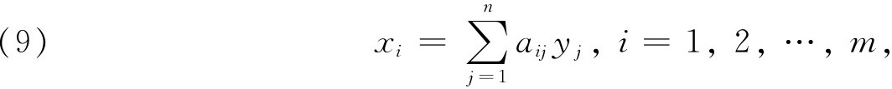
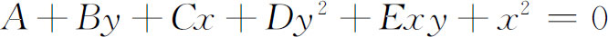
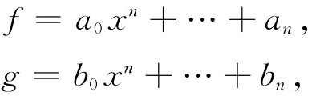
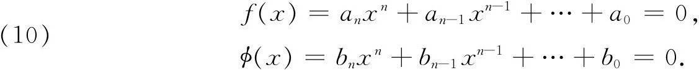
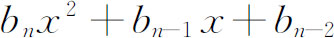
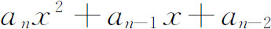
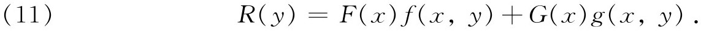

3．行列式和消元法理论
线性方程组的研究是在1678年以前由莱布尼茨开创的，我们今天把方程组写成

其中xi是已知量，而yj是未知量。1693年，莱布尼茨(15)用指标数的系统集合表示含两个未知量x与y的三个线性方程所组成的系统的系数。他从三个线性方程的系统中消去两个未知量，得到一个行列式，现在叫做方程组的结式。这个行列式等于零就意味着存在一组x和y，满足所有的这三个方程。
用行列式的方法解含有两个、三个和四个未知量的联立线性方程，可能在1729年，是由麦克劳林开创的，并发表在他的遗作《代数论著》（Treatise of Algebra，1748）中。虽然书中的记法不太好，但是他的法则是我们今天所使用的法则，克莱姆把它发表在他的《线性代数分析导言》（Introduction à l'analyse des lignes courbes algébriques，1750）中。克莱姆给出了一条法则，用于确定经过五个点的一般的二次曲线

的系数。他的行列式，和现在一样，是这样一些乘积的和，这些乘积是在每一行和每一列中取一个且只取一个元素组成：每一个乘积的符号是这样确定的，即从标准次序出发，得到这些元素的排列所需的重排数，如果这个数是偶数，则符号是正的，否则就是负的。1764年，贝祖(16)把确定行列式每一项的符号的手续系统化了。给定了含n个未知量的n个齐次线性方程，贝祖证明：系数行列式等于零（结式等于零）是这方程组有非零解的条件。范德蒙德(17)是第一个对行列式理论做出连贯的逻辑的阐述（即把行列式理论与线性方程组求解相分离）的人，虽然他也把它应用于解线性方程组。他还给出了一条法则，用二阶子式和它们的余子式来展开行列式。从集中到对行列式本身进行研究这一点来说，他是这门理论的奠基人。
参照克莱姆和贝祖的工作，拉普拉斯在1772年的论文《对积分和世界体系的探讨》（Recherches sur le calcul intégral et sur le système du monde）(18)中，证明了范德蒙德的一些规则，并推广了他的展开行列式的方法，用r行中所含的子式和它们的余子式的集合来展开行列式，这个方法现在仍然以他的名字命名(19)。
譬如说，含有两个未知量的三个非齐次线性方程组成的方程组，有公共解的条件是结式等于零，这个条件还表示从三个方程消去x和y得到的结果。但是消元法的问题在向别的方向伸展。给定两个多项式

要求f＝0和g＝0有公共解的条件。因为这个条件涉及这样一个事实，即至少存在x的一个值既满足f＝0又满足g＝0，所以把从f＝0解得的x值代入g，就得到ai和bi所应满足的条件。这个条件，或者消去式，或者结式，是牛顿第一个进行研究的。在他的《普遍的算术》中他给出了从两个方程（次数可以是二次到四次）中消去x的法则。
欧拉在他的《引论》第二卷第19章中给出了两个消元的方法。第二个方法是贝祖的乘数法的前驱，欧拉在1764年的论文(20)中对这个方法作了更好的描述。贝祖的方法证明是得到最广泛认可的一种方法，因此我们将对它进行考察。在他的《数学教程》（Cours de mathématique，1764—1769）中，贝祖考虑两个n次方程：

第一步：f乘以bn，ø乘以an，然后相减。第二步：f乘以bnx＋bn-1，ø乘以anx＋an-1，然后相减。第三步：f乘以

，ø乘以
，然后相减……这样得到的每个方程都是x的n-1次方程。可以认为这组方程是未知量为xn-1，xn-2，…，1的n个齐次线性方程的组合。这个线性方程组的结式（即未知量系数的行列式）是最初两方程f＝0和ø＝0的结式。当两个方程的次数不同时，贝祖也给出了一个求结式的方法(21)。消元法理论也适用于次数高于1的两个方程f（x，y）＝0和g（x，y）＝0。解这个问题的动机是出于要确定两个方程的公共解的个数，或者从几何角度来讲，是求出相应于这两个方程的曲线的交点的个数。从f（x，y）＝0和g（x，y）＝0消去一个未知量的卓越方法，是由贝祖第一个在1764年的文章中勾出大致轮廓，而在他的《代数方程的一般理论》（Théorie générale des équations algébriques，1779）中公布于众的。贝祖的想法是：把f（x，y）和g（x，y）分别乘上适当的多项式F（x）和G（x），就能作出

另外，他还寻求F和G，使得R（y）的次数尽可能地低。
结式的次数的问题也由贝祖在他的《代数方程的一般理论》中做出了回答（欧拉在1764年的论文中也独立地回答了这个问题）。两人的答案都是mn，即f和g的次数的乘积，两个人都把问题归结为从一个辅助的线性方程组中进行消元的问题，从而证明这条定理。上述的这个乘积也是两条代数曲线的交点数。雅可比(22)和明金（Ferdinand Minding）(23)对于两个方程的组合也给出了贝祖的消元法。但是他们谁也没有提到贝祖。也许是他们并不知道贝祖的工作。